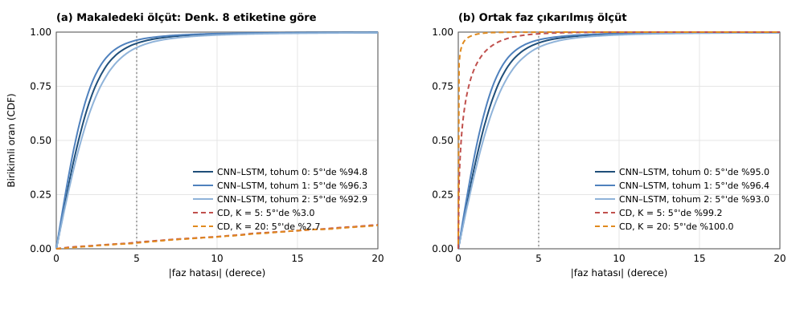

22 Kasım 2026, dal thesis/p4-deneyler. Bu bir teknik rapor; tez metni değil (Kural 9). Her sayı aşağıda adı geçen betiğe ve ham çıktı dosyasına bağlı. MATLAB çalıştırılmadı (Kural 8). Makale 1 için kullanılan sayılar, daha önce onaylanan NumPy/PyTorch aktarımıyla alınmış bağımsız bir çekilişten geliyor; MATLAB'ın rng(42) örnekleriyle birebir aynı değil.
Not: tezin taslağı bu depoda yok. Şekil 6.1, 6.3 ve 6.6'yı içeriklerine göre eşleştirdim: 6.1 eğitim eğrisi, 6.3 hata CDF'i (makalede Şekil 8), 6.6 CSI hatasına gürbüzlük (makalede Şekil 10). Eşleşme yanlışsa söyle, ilgili satırı düzeltirim.
Önerilen ölçütü (ortak faz kaymasından arındırılmış RMSE, min_φ RMSE(θ̂ + φ, θ*)) hesapladım. Mevcut eğitilmiş CNN–LSTM ağırlıkları kullanıldı; yeni eğitim yapılmadı. Bu ölçütte de, alınan hızda da koordinat inişi (CD), CNN–LSTM'i geçiyor.
| Yöntem | Makaledeki ölçüt (°) | Ortak faz çıkarılmış RMSE (°) | 5°'nin altındaki oran | Hız (b/s/Hz) | Optimuma göre kayıp |
|---|---|---|---|---|---|
| CNN–LSTM, tohum 0 | 3.18 | 3.13 | %95.0 | 5.797 | 0.693 |
| CNN–LSTM, tohum 1 | 2.77 | 2.72 | %96.4 | 5.797 | 0.693 |
| CNN–LSTM, tohum 2 | 3.90 | 3.85 | %93.0 | 5.797 | 0.694 |
| CD, K = 5 | 104.02 | 1.10 | %99.2 | 6.467 | 0.024 |
| CD, K = 20 | 104.50 | 0.25 | %99.98 | 6.488 | 0.003 |
| CD, K = 50 | 104.79 | 0.05 | %100 | 6.490 | 0.0002 |
| Optimum (h_d'yi hesaba katan) | 104.85 | 0.00 | %100 | 6.490 | 0 |
Test kümesi 6000 senaryo × 32 eleman. Kaynak: audit/scripts/step8_invariant_rmse.py → audit/raw/step8_invariant_rmse.json; veri m1_data.generate(40000, seed=42), bölme tohumu 42; commit e5af163.
Ne anlama geliyor:
rate_after_common_phase_fix_bpshz). Ama ağ yayımlandığı hâliyle etiketi öğrendiği için, etiketin kendisi kadar (5.799) hız veriyor.Tez için sonuç: "CNN–LSTM klasik yöntemlerden daha doğru" cümlesi bu ölçütle de, hızla da kurulamaz. Kurulabilecek doğru cümleler:
Bu sonuncusu tezin değerlendirme protokolü fikriyle de uyumlu: doğru ölçüt faz hatası değil, hız.
Koddaki gerçek bölme (thesis_exp/makale2_revizyon/veri_bolme/kontrol_bolme.py → veri_bolme.json):
| Küme | Boyut | Kim kullanıyor |
|---|---|---|
| Eğitim | 4200 | Öğrenilen güncelleme kuralı (scripts/mumiso_unrolled.py) |
| Doğrulama | 900 | Öğrenilen kural en iyi epoch'u ilk 500'de seçiyor. Adam'ın adım boyu ve amacı bunların ilk 400'ünde seçiliyor. |
| Test | 900 | Şekil 5'teki bütün sayılar ilk 600'de raporlanıyor (mumiso_equal_step.py, mumiso_latency_parity.py). |
ris_mu/features.py:split_indices, tohum 0. Üç küme ayrık; 400'lük küme 500'lüğün alt kümesi.samples = 6000, eval_n = 600, val_n = 400) ve beş checkpoint'in eğitim ayarı (samples = 6000) bununla tutuyor.Makaledeki değişiklik (§V-A):
Makale 10 sayfaya taştığı için dört cümle, bilgi kaybı olmadan kısaltıldı (DEGISIKLIKLER.md, 18. tur). Makale yine 9 sayfa ve 46 kaynak. İddia denetleyicileri 126/126 ve 120/120.
Yayımlanmış makale değiştirilmedi (değiştirilemez). Aşağıdaki tablo, her madde için kodun ne gösterdiğini ve tezde ne yapılabileceğini veriyor. Kaynaklar:
aisy_paket/orijinal/ (dokunulmadı);audit/AUDIT_REPORT.md ve ham dosyaları (12 Kasım bağımsız denetimi);step8 betikleri.Koddan okunanlar (ris_CD.m; diğerleri denetimin satır satır aktardığı ris_AO/PGD/PSO/SPA/WMMSE.m, audit/scripts/step2_baselines.py):
| Yöntem | Amaçta h_d var mı? | Başlangıç | Faz araması | Durma |
|---|---|---|---|---|
| CD | Var: |h_d + Σ G_n F_n e^{jθ_n}| | Bütün fazlar 0 | Her eleman için kapalı form, sürekli (ızgara yok), [−π, π)'ye sarılı | Sabit K tarama (K = 5); yakınsama testi yok |
| AO | Var | 0 | CD ile aynı algoritma | Varsayılan K = 1 |
| SPA | Var | h_d'den başlar | Elemanları sırayla hizalar, tek geçiş | Tek geçiş |
| PGD | Var | 0 (z = 1) | Gradyan adımı 0.2, birim modüle izdüşüm | Sabit 50 yineleme |
| "WMMSE" | Var | 0 | Eleman başına tek gradyan adımı (0.1); adı WMMSE ama algoritma WMMSE değil | 1 yineleme |
| PSO | Var (uygunluk = alınan güç) | Rastgele, tekdüze | 20 parçacık | Sabit 30 yineleme |
audit/raw/step2_baselines.json).Tezde ne olur: yöntem bölümüne yukarıdaki tabloyu özetleyen 3–4 cümle girer. Eleştirel alt bölüm güçlenir, çünkü 1. bölümdeki ölçüm doğrudan cevap veriyor.
theta_NN_multioutput.m, eğrileri MATLAB'ın 'Plots','training-progress' penceresiyle çiziyor. Bu pencerenin özellikleri:
trainNetwork çağrısı eğitim bilgisini (info) kaydetmiyor. Eğrinin sayısal değerleri sonradan çıkarılamaz; yalnızca ekran görüntüsü var.Tezde ne olur: eksen "yineleme" ve "RMSE (sin/cos çıktısı, birimsiz)" olarak etiketlenir. Metin derece cinsinden faz hatasından söz ediyorsa, şekle değil test RMSE'sine bağlanır. Şekil "RMSE (°)" ya da "epoch" diyorsa yanlıştır.
plot_results.m'deki CDF bölümü yayımlanan görüntüyle uyuşmuyor (audit/raw/step0_step3_notes.md).audit/raw/step8_cdf.svg (audit/scripts/step8_cdf_plot.py).cnn_lstm_test_results.mat dosyası gerekiyor. Betik phase_err değişkenini bu dosyaya kaydediyor. Sende varsa gönder; eğriyi o veriden yeniden çizerim. Dosya v7.3 biçiminde, okumak için h5py kurmam gerekecek.
Şekil. |Faz hatası| CDF'i, bağımsız Python yeniden üretimi (6000 test senaryosu × 32 eleman). (a) Makaledeki ölçüt; CD burada 5°'de %3 gösteriyor, çünkü etiket h_d'yi yok sayıyor. (b) Ortak faz çıkarılmış ölçüt; CD her K'de CNN–LSTM'in solunda.
Tezde ne olur: ya .mat dosyasından birebir çizilir, ya da yeni şekil "bağımsız Python yeniden üretimi" diye açıkça etiketlenerek kullanılır.
3.95° iki yerde geçiyor: - Tablo 1: "doğrudan faz tahmini", aynı mimari olduğu söyleniyor; - Tablo 6: "FC-DNN (doğrudan) 3.95 ± 1.71".
Doğrudan faz için sayı üreten tek kod, transformer_baseline.m içindeki 512-512-256 FC-DNN (MLP). Tablo 1'deki "aynı mimari, doğrudan çıkış" için hiçbir sürümde kod yok. Yani iki satır büyük olasılıkla aynı FC-DNN koşusu, ve Tablo 1'deki "aynı mimari" ifadesi kodla desteklenmiyor.
Ek tutarsızlık: FC-DNN için üç farklı değer var.
Bağımsız yeniden üretimde FC-DNN (doğrudan) 83.85° verdi, yani tamamen başarısız oldu (audit/raw/train/fcdnn_direct_N32_s0.json).
Tezde ne olur: Tablo 1'in satırı "FC-DNN (doğrudan faz)" diye adlandırılmalı. Daha iyisi, tezin kendi aynı mimarili karşılaştırması kullanılmalı (TEZ_YAZIM_REFERANSI.md §6.4, results/sumiso_representation.json): SISO'da sin/cos 14.63° ± 0.38, açı + 1−cos kaybı 21.35°, açı + düz MSE 30.33°. sin/cos üç tohumun üçünde de en düşük RMSE'yi veriyor. Bu, sin/cos katkısını kodu olan bir deneyle destekliyor.
audit/raw/step3_sources.json.Tezde ne olur: parametre sütunu ya çıkarılır, ya da yalnızca kodu olan iki model için koddan sayılan değerle verilir (CNN–LSTM 161 794; CNN-Transformer 17 442). Ablasyon satırları ya çıkarılır ya da "betiği bulunamadı" notuyla verilir. Not bırakmak yerine çıkarmayı öneririm.
audit/raw/step6_eval.json, step2_baselines.json).Tezde ne olur: şekil ya çıkarılır, ya da hata modeli açıkça tanımlanmış yeniden üretimle değiştirilir. Tezin kendi kusurlu CSI deneyleri ön kayıtlı ve ayrıca var (ON_KAYIT_KISMI_CSI.md, TEZ_YAZIM_REFERANSI.md §6.7).
| Madde | Durum | Önerilen işlem |
|---|---|---|
| 19 (Makale 2) | Kod okundu, kesin | Makalede düzeltildi; sayılar değişmedi |
| 8 | Kod okundu, kesin; ölçüldü | Uygulama paragrafı ve 1. bölümdeki tablo |
| 9 | Kod okundu, kesin | Eksen etiketleri: yineleme, birimsiz sin/cos RMSE |
| 10 | Betik yok; yeniden üretim var | .mat gelirse birebir; yoksa etiketli yeni şekil |
| 11 | Kod okundu | Satır "FC-DNN (doğrudan)"; tezin §6.4'ü kullanılsın |
| 12–13 | ÜRETİLEMEDİ (kod yok); parametreler tutarsız | Çıkarılsın ya da yalnızca kodu olanlar |
| 14 | ÜRETİLEMEDİ (kod ve model tanımı yok) | Çıkarılsın ya da tanımlı yeniden üretim |
cnn_lstm_test_results.mat dosyası (varsa): CDF'i birebir çizmek için.python3 thesis_exp/makale2_revizyon/veri_bolme/kontrol_bolme.py # madde 19, < 5 s
python3 audit/scripts/step8_invariant_rmse.py # bölüm 1, ~40 s, tek iş parçacığı
python3 audit/scripts/step8_cdf_plot.py # madde 10 şekli
Tohumlar: veri 42, bölme 42 (Makale 1 aktarımı); statik küme bölmesi 0, senaryo 11 (Makale 2). Eğitim yok; zamanlama ölçümü yok.